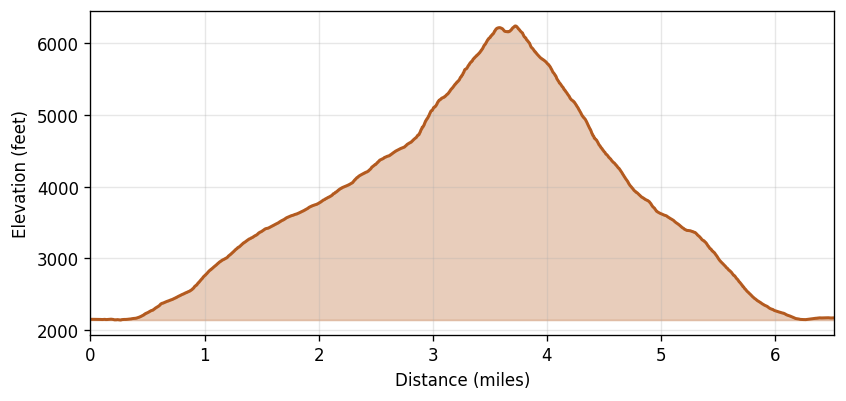
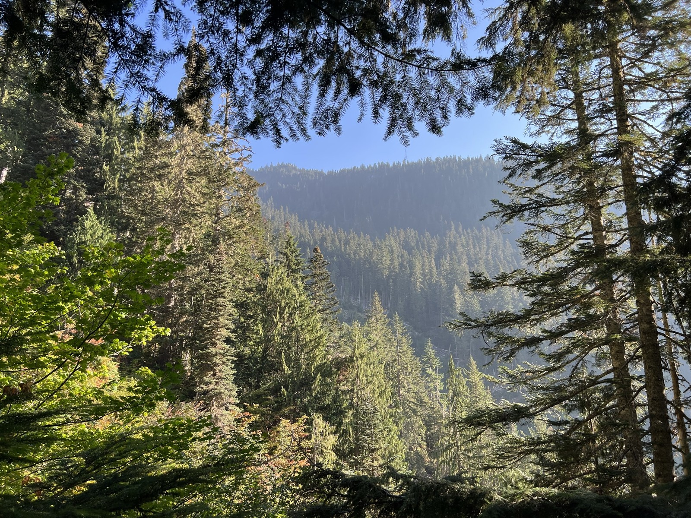
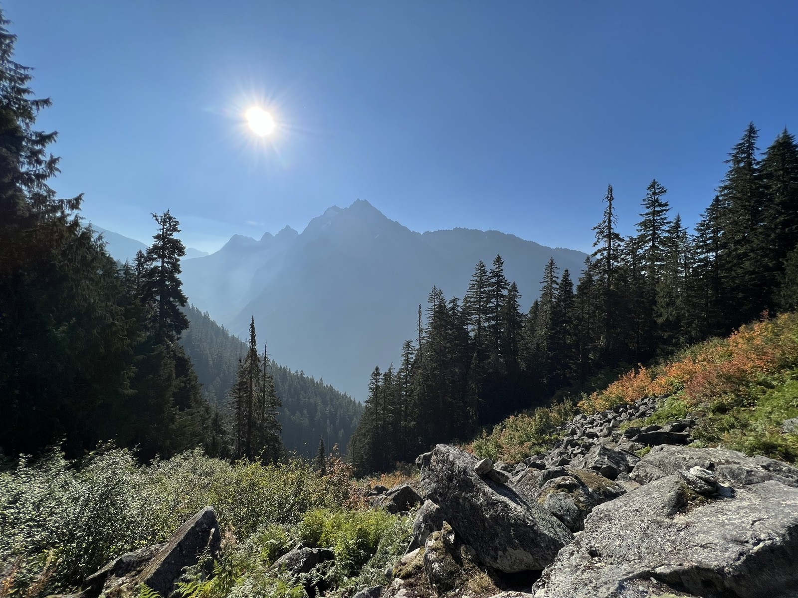
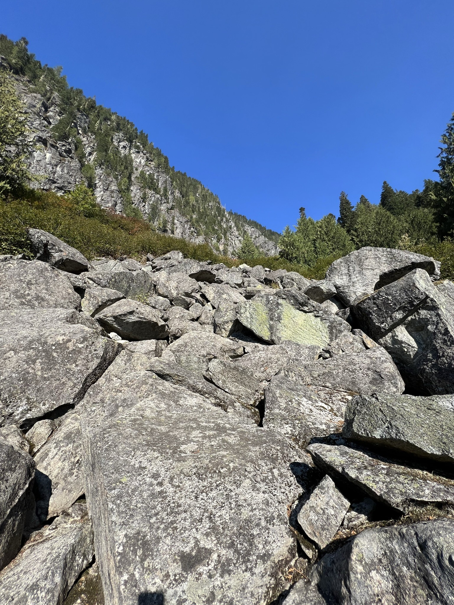
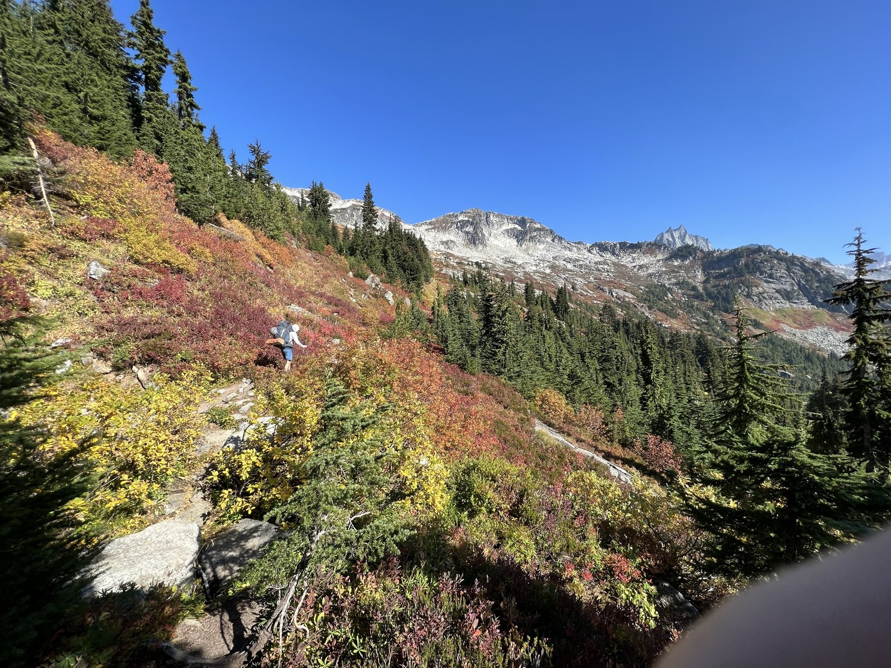
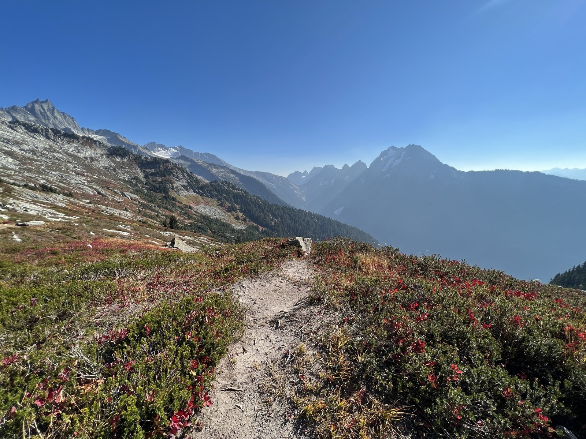
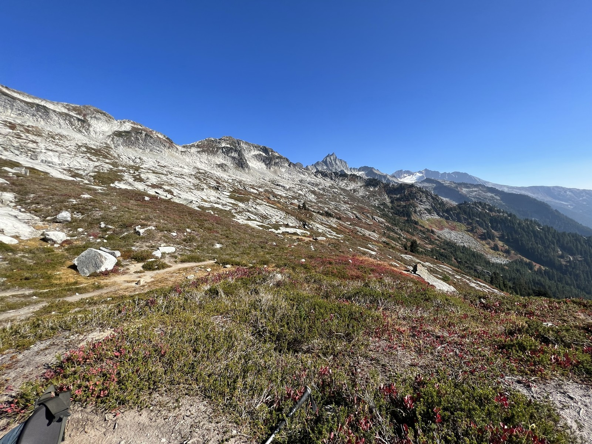
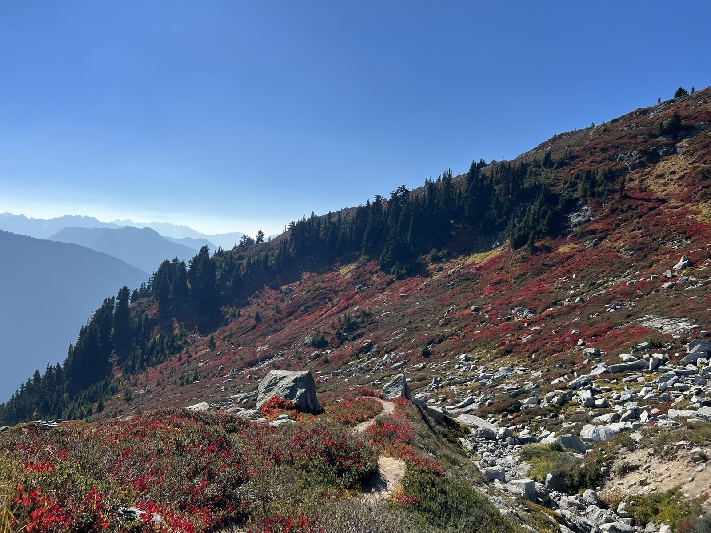
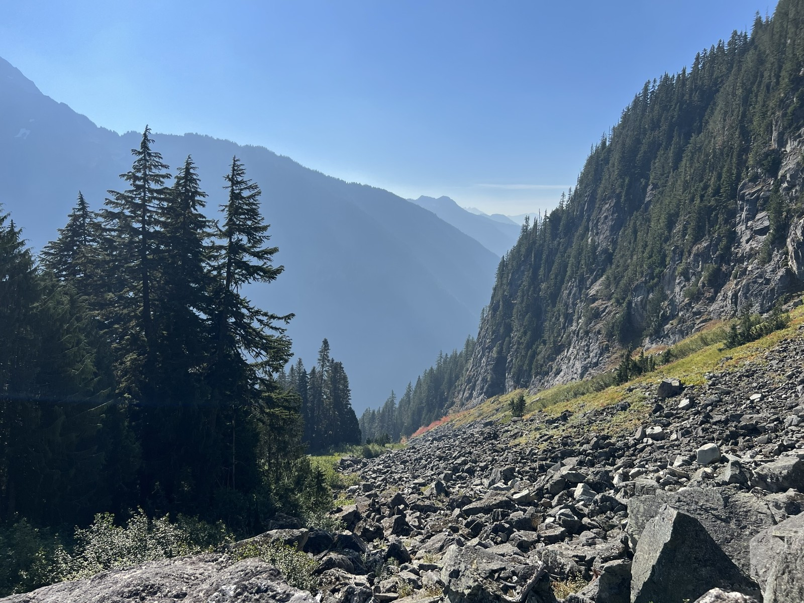

Eldorado Peak
Region: North Cascades National Park, WA
Date: 2022-10-15 (08:23–19:51 PDT)
Distance: 6.52 miles
Gain: 4,159 feet
Duration: 11h 27m (6h 13m moving, 5h 14m stopped)
Avg speed: 1.05 mph moving / 0.57 mph overall
Weather: Clear. Temps 52–75°F, ESE winds 3–6 mph, no precipitation.
Route
Elevation Profile

Trip Report

Beautiful day for an October hike in the North Cascades! We left Seattle in the morning to start the hike around 7:30am. Luckily smoke from the Bolt Creek Fire was blowing west away from us, so we only had a little haze. As the tree grade suggests, the route starts very steep, and it stays that way. We intended to camp overnight, so we brought heavy packs with tents.


Level 2 - The boulder fields. There are a couple fields that the trail crosses. Lots of fun scrambling is involved, but it does get more difficult once you veer off-trail. This took a lot of energy on the way back down.




Views from the low camp in the high country. This time of the year those red flowers (whatever they are called) are really vibrant.
This is the view from the other side of the ridge shown in the previous picture. We decided to turn back once we had Eldorado Peak in view. Suddenly the scrambling got really tough. Being late in the season with no one else on the trail, we wondered if we'd be able to find a way up onto the glacier. It had receded quite a bit more than we first expected. In the winter this view is mostly snow. For safety, we decided to turn back and hike back down to the car. As excited as I was to camp on the glacier, I was a little bit relieved.

Packing list.